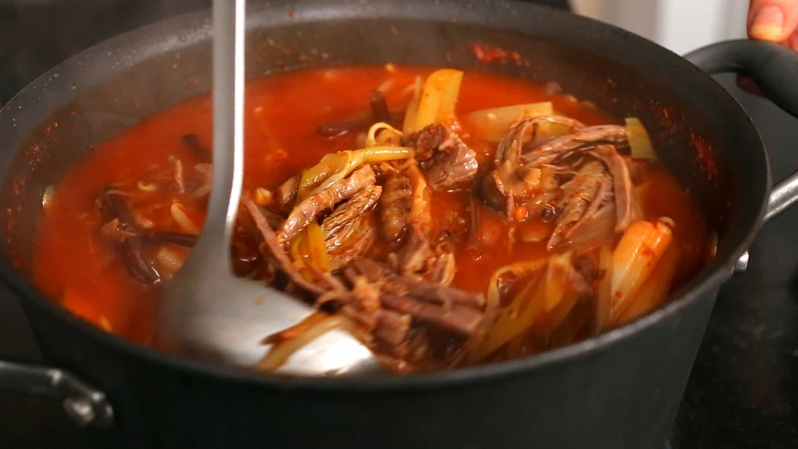

Home
Yukgaejang

A perfect soup for cold days
Yukgaejang, also known as spicy beef soup, is a spicy, soup-like Korean dish made from shredded
with scallions and other ingredients, which are simmered together for a long time. It is a
variety of gomguk, or thick soup, which was formerly served in Korean royal court cuisine.
It is thought to be healthful and is popular due to its hot and spicy nature.
Ingredients
- 1 pound beef brisket, cut into several pieces along the grain 3 inch long, soaked in cold water for 10 to 20 minutes, washed, and drained
- 4 dried shiitake mushrooms
- 1 medium onion, cut in half
- 12 ounces mung bean sprouts, washed and strained
- 3-4 large green onions (dae-pa) or 14-16 green onions, cut into 2½ inch long pieces
- 6 ounces of soaked (or fresh) gosari (about 2 cups), cut into 2½ inch long pieces
- 8 cloves of garlic, minced
Sauce
- ¼ cup Korean hot pepper flakes (gochugaru)
- 1 tablespoon kosher salt
- 1 tablespoon soy sauce
- 1 table spoon toasted sesame oil
- 1 tablespoon olive oil (or any cooking oil)
Directions
- In a large pot, bring 3 quarts (12 cups) of water to a boil. Add the beef along with the dried shiitake mushrooms and the onion.
- Cook for 1 hour over medium high heat.
- While the pot boils, combine the sauce ingredients in a bowl and mix it well.
- Cover with plastic wrap and set aside.
- Put the mung bean sprouts, green onions, gosari, and garlic in a large bowl.
- 1 hour later, check the beef. Take a sample chunk and split it with your fingers or fork. If it splits nicely, it’s done. If it’s a little tough to split, let it cook for 10 more minutes. As stock boils off, you want to maintain about 10 cups’ worth, so add some water.
- When it’s done, remove the beef, onion, and mushrooms with a slotted strainer.
- Let the beef and mushrooms cool down and discard the cooked onion.
- Mix the vegetables with the seasoning sauce by hand until well incorporated. Add to the boiling stock.
- Cover and cook 20 minutes over medium high heat until the vegetables are cooked through and tender, but not mushy.
- Slice the mushrooms and pull the beef apart into strips. Add to the boiling soup and cook another 10 minutes.
- Remove from the heat, ladle and serve. Prepare a small bowl of salt on the table, for anyone who wants to add some. Serve with rice and side dishes. Before eating, people can add a pinch of salt to their taste if they like.